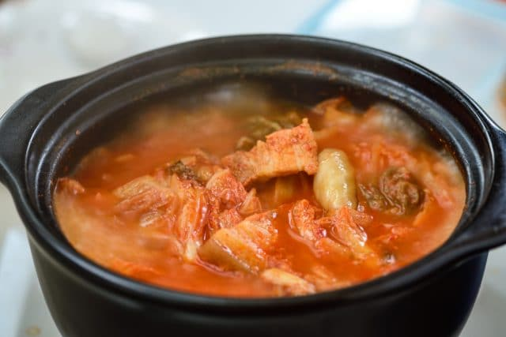
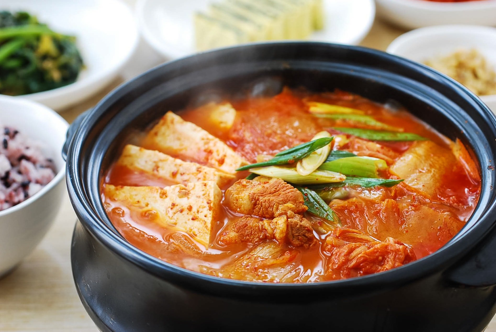

Instructions
Step 1
Cut the kimchi, meat, and tofu to bite-size pieces. Roughly chop the scallions.

Step 2
Heat a small to medium pot with 1 tablespoon of oil. Add the kimchi, pork*, red pepper flakes and garlic and cook over medium high heat until the kimchi is softened and the pork cooks through, about 5 to 7 minutes.

Step 3
Add the kimchi juice and about 2 to 2.5 cups of water (or broth). Bring it to a boil, and continue cooking for 5 minutes. Then, reduce the heat to medium, and boil, covered, for about 15 minutes.
Step 4
Put in tofu and scallions. Add seasoning as needed. Boil until the tofu is cooked through, about 5 minutes.

Finished!
Serve while bubbling over from the heat. Leftovers can be kept upto a week in the refridgerator.